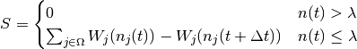

activity module¶
This module contains code that governs the activities that the agent performs in order to satisfy its needs.
This module contains the following class: activity.Activity.
-
class
activity.Activity[source]¶ Bases:
objectAn activity enables a
person.Personto address its satiation . This class’s purpose is to encapsulate general
capabilities that specific instances of activity will derive from.
. This class’s purpose is to encapsulate general
capabilities that specific instances of activity will derive from.Variables: - category (int) – an unique identifier naming the type of activity.
- t_end (int) – the end time of the activity [universal time, seconds]
- t_start (int) – the start time of the activity [universal time, seconds]
- dt (int) – the duration of the activity [seconds]
-
advertise(the_need, dt)[source]¶ Calculates the advertised score of doing an activity. Let be the set of all needs addressed by the activity. The score
 is calculated by doing the following
is calculated by doing the following
- where
 is the current time
is the current time is the duration of the activity
is the duration of the activity- is the satiation at time
 is the threshold value of the need
is the threshold value of the need- is the weight function for the particular need
Parameters: - the_need (need.Need) – the primary need associated with the respective activity
- dt (int) – the duration of doing the activity [minutes]
Returns score: the score of the advertisement
Return type: float
-
advertise_interruption()[source]¶ Advertise the score if this activity interrupts another activity.
Note
This function should be overloaded in derived classes.
Returns score: the advertised score Return type: float
-
end(p)[source]¶ This function handles some of the common logistics in ending a specific activity assuming the activity ends without an interruption.
Currently the function does the following:
- reset the
state.Statevariable’s start time to the current time - reset the
state.Statevariable’s end time to the current time
Parameters: p (person.Person) – the person whose activity is ending Returns: None - reset the
-
halt(p)[source]¶ This function handles some of the common logistics in ending a specific activity due to an interruption.
Currently the function does the following:
- reset the
state.Statevariable’s start time to the current time - reset the
state.Statevariable’s end time to the current time
Parameters: p (person.Person) – the person whose activity is being interrupted Returns: None - reset the
-
print_id()[source]¶ This function represents the activity category as a string.
Return msg: The string representation of the category Return type: str